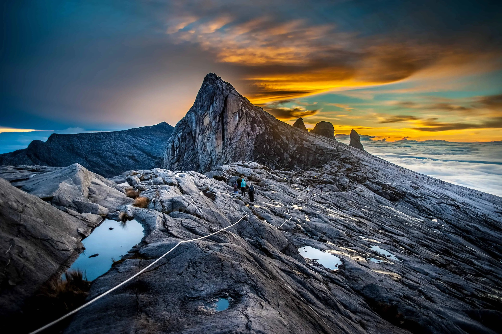

Mount Kinabalu:
The Majestic Summit of Borneo, Crowned with Diverse Flora and Fauna

Introduction:
Mount Kinabalu's specialty lies in its location at a renowned World Heritage Site—Kinabalu Park.
Many variations of flora and fauna can be found there. It is the highest peak in Southeast Asia with altitude 4095.2 meters.
A recent botanical survey of the mountain estimated a staggering 5,000 to 6,000 plant species (excluding mosses and liverworts but including ferns),
which is more than all of Europe and North America (excluding tropical regions of Mexico) combined. It is therefore one of the world's most important biological sites.
Mount Kinabalu is the highest mountain between the Himalayas and New Guinea.
Mount Kinabalu derives its name from the Kadazan word, 'Aki Nabalu', meaning 'the revered place of the dead'.
It is one of the safest and most conquerable peaks in the world—provided that you're reasonably healthy and physically fit.
Insights:
All climbers must be accompanied by a mountain guide,
and a mountain guide can bring at most 5 climbers. You can also hire a porter for our climb.
In order to protect the environment of Mount Kinabalu, the number of climbers per day is limited,
usually you should make an appointment before one to three months so that the accommodation can be ensured.
For first time climbers, the recommendation is to take the 2D1N climb package provided in the official website,
and the price is almost RM 2,020(NT 14,200) for international travelers. However, if you are a senior climber, you are recommended to take part in 3D2N climb package to get a better experience.
This is also the package I selected, and the price is almost RM 2620(NT 18340) for international travelers, and accommodations are included in that price.
The first day takes 4-6 hours to arrive in our stay which is located at 3,000 meter height, and we eat a lot to boost our energy and rest.
The second day, we woke up at 2.00 a.m. to prepare to reach the summit to watch the sunrise.
This is the most highlight part in the whole journey, the route is surrounded with amazing scenery,
so if anyone planned to climb Mount Kinabalu, don't forget to bring your camera.
Recommended Equipment and Tips:
- Go in April to May or September to December, because the weather will be more stable and not rainy. The rainy day will make it hard to climb.
- Trekking Poles : prepare two, I am regret for only bringing one.
- Hiking Shoes: prepare anti-slip shoes, and the mountain guide suggested the size should be bigger than the size of your shoes.
- Persistence: The first 1 km will be extremely hard, insisting and adjusting breath and steps. I feel hard too, but after the 1 km journey I am adapted, and the following journey will be easy.
Budget:
- 3D2N package : RM 2,620 (Foreigners Prices).
- Mountain guide : RM350.
- KK Park entrance ticked : RM 10.
- Porter : RM 200 (round trip).
- Stay for a night before climbing RM 45.
- The ratio between MYR and NTD is 1:7
About us